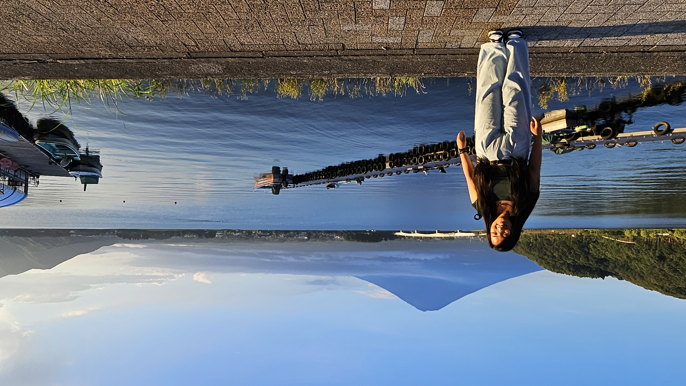

Summer 2024: An Internship Abroad
Tokyo, Japan
I thought studying abroad in Denmark was my big international adventure. Life had a different plan.

My dream at a young age was to travel the world. I thought I had completed that with studying abroad in Denmark. But never would I have thought that I would work abroad — let alone in Japan, at one of the most forward-thinking mobility companies on the planet.
When the offer from Woven by Toyota came through, I had to read it a couple of times just to make sure I was reading it right. Woven is Toyota's subsidiary focused on autonomous driving, mobility innovation, and the future of transportation — the kind of company where engineers wake up excited about genuinely unsolved problems. And they wanted me, a fresh Chemical Engineering (Honors) graduate from UT Austin, to join them in Tokyo as a Systems Engineering intern.
I said yes immediately. Then I found out about the visa process.
The Visa Saga: Persistence in Practice
I'd love to tell you the path to working in Japan was smooth. It was not.
International work visas aren't just paperwork — they're a coordination challenge across multiple institutions, government agencies, and time zones, each with their own timelines that don't always line up neatly. The process for a US citizen to obtain a Japanese work visa involves your employer, the Japanese consulate, your university, and layers of documentation that all have to be exactly right.
There were moments I genuinely wasn't sure it was going to happen. I remember staring at an email from the consulate one evening, reading the same sentence for the fifth time, wondering whether I needed to start thinking about backup plans. There were forms that came back with corrections needed. There were delays I couldn't control. There were phone calls I had to make that I really didn't want to make.
But here's what that process taught me, which I didn't expect: bureaucratic obstacles are actually just a filter for how much you want something. Every roadblock had a path through it if I was willing to dig. Every form that came back wrong was one more chance to get it right. And when I finally cleared security at Narita Airport in June 2024 and stepped out into the humidity of a Tokyo summer — I didn't just feel excited. I felt like I had earned it.
Zero Japanese. 2.5 Months. Let's Go.
I arrived in Tokyo speaking essentially zero Japanese. My total functional vocabulary on day one could be counted on one hand. And I was about to work in one of the world's most linguistically distinctive environments — a country where even basic errands require at least some language ability, and where professional settings have their own layer of formality on top of that.
The first few weeks were genuinely humbling. I used Google Translate constantly. I pointed at menus. I nodded at things I half-understood and then Googled the full context afterward. I memorized the characters for my subway stop because I was terrified of getting on the wrong train. (I did get on the wrong train once. Only once.)
What surprised me was how fast immersion forces progress. When you don't have the option to retreat to your native language, you adapt. By the end of week two I could navigate the convenience store checkout. By month one I had built enough vocabulary to have basic work conversations. By 2.5 months in, I could move through the city without my phone constantly propping me up — and I'd started to actually enjoy the challenge of it.
My colleagues were incredibly patient and kind about the language gap. One thing I noticed quickly: in Japan, effort is respected. Showing up and genuinely trying — even when you're stumbling through pronunciation — earns goodwill that no shortcut can replicate.
I also learned something about how I learn: I don't need perfect conditions. I just need a strong enough reason to figure it out.
Woven by Toyota: Systems Engineering in a New World
The work itself was everything I hoped it would be.
Woven by Toyota operates at the intersection of software, hardware, and mobility — which means the engineering problems don't fit neatly into any one discipline. As a Systems Engineering intern, I was working on problems that required me to zoom out and think about how components interact, where failure points emerge, and what safety means when you're building technology that real people will trust with their physical safety.
I can't share the specifics of my projects, but I can tell you the environment was demanding in the best way. Every morning I was at my desk early because I genuinely wanted to be there. The engineers around me had worked at some of the most respected companies in the world, and they were generous with their time and knowledge in a way I didn't take for granted for a single day.
Working in a cross-cultural, multilingual engineering environment also taught me things that no domestic internship could have. The importance of being extremely precise in written documentation — especially when your reader's first language isn't yours. The value of visual communication in technical work. The discipline of making your assumptions explicit, because you can't take shared context for granted the way you might at home.
The Presentation to Toyota Executives
A few weeks in, I found out I would be presenting my engineering work to Toyota executives. Not my direct team. Not a casual progress check. Executives.
I want to be honest about my reaction: it was some combination of very excited and very terrified, in roughly equal parts.
I spent significant time preparing. Every safety assumption had to be grounded in evidence. Every claim had to be backed up clearly. Every slide had to be precise and clean — because in a high-stakes technical presentation, vague language is the enemy of credibility. My manager and colleagues gave me feedback. I revised. I rehearsed. I revised again.
The day of the presentation, I walked in thinking: whatever happens, you know this material. You prepared.
The presentation went well. Better than I expected — the questions from the executives showed genuine engagement with the work, which is the best outcome you can hope for in that setting. Walking out afterward, I felt a genuine shift in how I saw myself professionally. I had just presented technical engineering work to senior leadership at a major global company, in a country I'd arrived in not knowing the language, at an organization that had been operating for only a few years.
That moment stayed with me. It still does.
Tokyo: A City That Doesn't Stop Teaching You
Outside of work, Tokyo was its own complete education.
The city operates at a scale that's hard to fully wrap your head around — 38 million people in the greater metro area, and somehow it all runs on time. The subway system is one of the most efficient pieces of infrastructure I've ever encountered. Strangers are unfailingly courteous. The food is extraordinary at every price point. And the city's relationship with craftsmanship — the idea that whatever you do, you do it well — is everywhere, from the way a restaurant hands you your meal to the way an engineer debugs a system.
I hiked near Mt. Fuji on a weekend morning that I'll remember for the rest of my life. I watched racing at the Suzuka Circuit, which, if you know anything about motorsports, is a bucket-list item I still can't believe I checked off. I explored neighborhoods that each felt like an entirely different city. I found a ramen spot that I still think about.

I also learned how to be comfortable being the outsider. In a city where I looked different and spoke the language haltingly at best, I had to get good at reading situations, being patient, letting people help me even when my instinct was to insist I could figure it out myself. That's a harder skill than it sounds, and one I've used every day since.
What Japan Actually Taught Me
When people ask what I took away from the summer in Tokyo, my answer has two parts: resilience and perspective.
Resilience — because I proved to myself that I can show up to a demanding engineering role in a foreign country, navigate a visa process that nearly didn't happen, learn a language under pressure, and deliver work I'm proud of to a senior audience. That knowledge doesn't go away. Every hard thing after Japan felt slightly more manageable because I knew what I was capable of.
Perspective — because experiencing a completely different engineering culture changed how I see problems. The Japanese approach to precision, safety, and long-term thinking reshaped how I think about project planning and quality standards. Working cross-culturally made me a better communicator and a better collaborator. And living as a foreigner for three months made me more empathetic to the people in every room I walk into who might be navigating something I can't see.
I came home from Tokyo a genuinely different version of myself. And I carry a piece of that city with me everywhere I go — including, as it turns out, to my next chapter at Walt Disney Imagineering, where I'd eventually find myself working on projects for Tokyo Disneyland and DisneySea. Sometimes life is just like that.